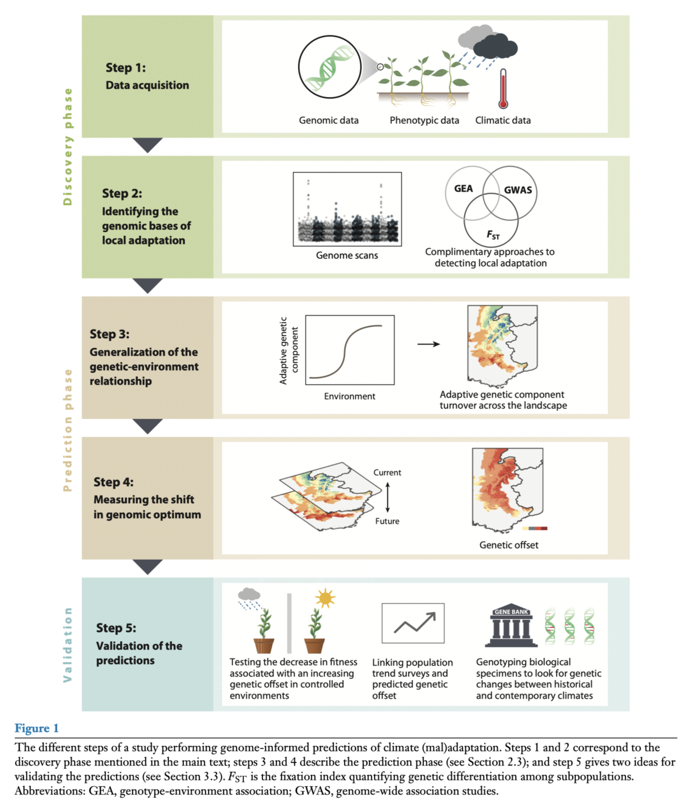
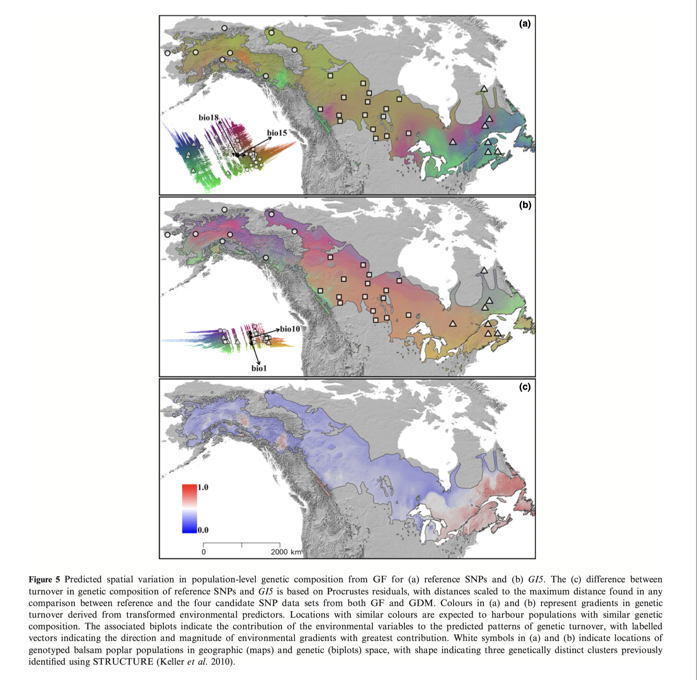
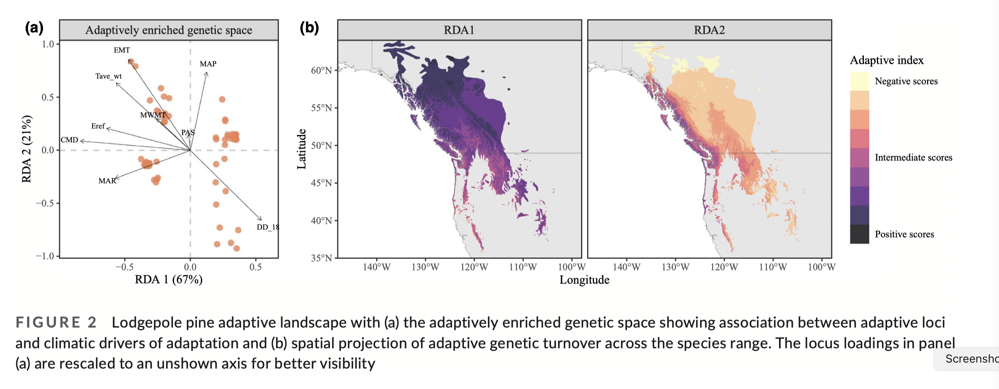
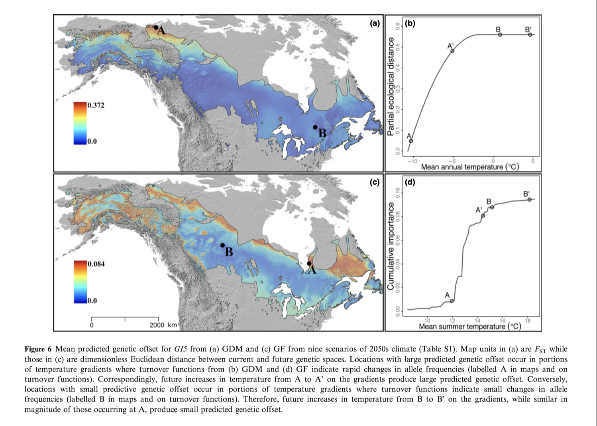
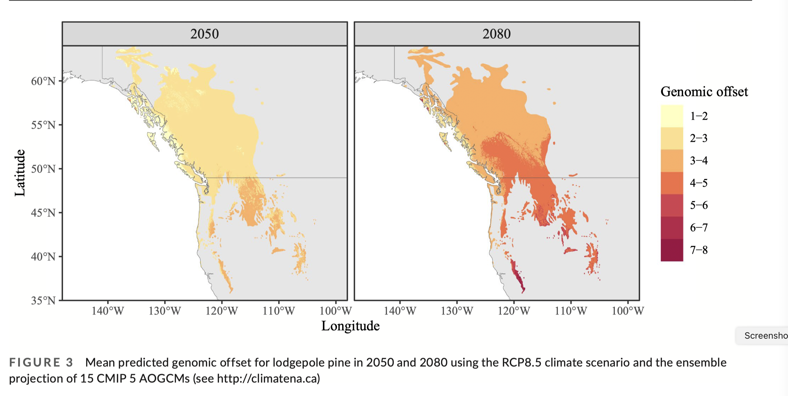
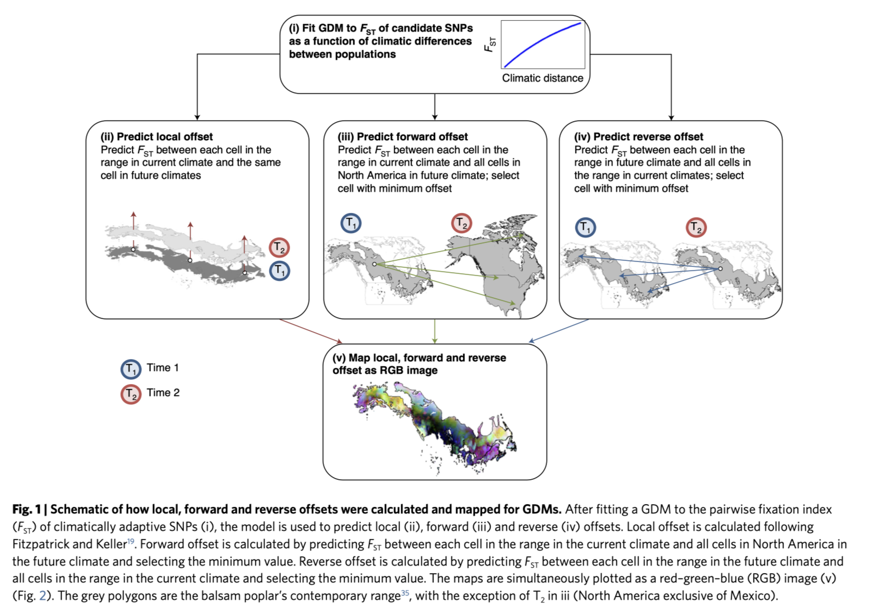
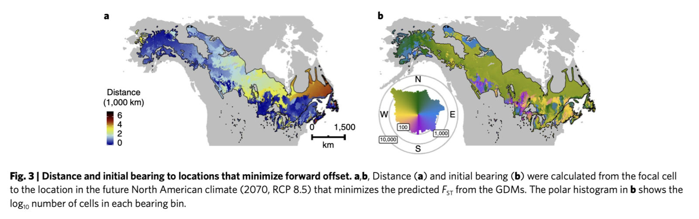
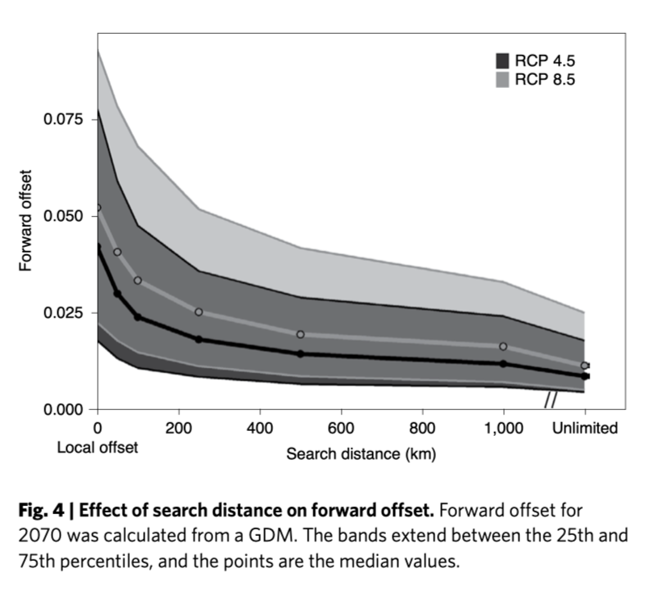

library(vegan)
library(ggplot2)
library(ggVennDiagram)
# required for pdadapt.R function
library(robust)
# To install qvalue on your own device:
#if (!require("BiocManager", quietly = TRUE))
# install.packages("BiocManager")
#BiocManager::install("qvalue")
library(qvalue)
path<-"/home/data/gea/"
# Genetic data
load(paste0(path, "AllFreq.RData"))
load(paste0(path, "Neutral.RData"))
# Spatial data - files that you made in RDA workshop
Variables<-read.csv(paste0(path, "Variables.csv"))
Coordinates<-read.csv(paste0(path, "Coordinates.csv"))More GEA: genetic offsets & maladaptation
Instructor: Riginos
Under construction!!
One of the goals of landscape genomics is to find loci that contribute to adaptation.

Tests of selection, especially based on finding loci that show strong correlations with environmental features, can provide lists of candidate loci.
Simulations indicate that RDA-based methods of identifying outliers perform well as tests of environmentally induced selection (Forester et al 2016).
Given the unfolding climate crisis, there is growing interest in leveraging genetic information to identify populations that are vulnerable (or resilient) to anticipated future climate conditions.
There are numerous names for this concept:
(mal)adaptation = risk of non-adaptedness = genomic offset = genomic vulnerability
The general genomic offset framework is as follows:

Capblancq et al. 2020
For example, in the lodgepole pine data used by Capblancq & Forester (2021), they:
used RDAs to identify correlations between environmental variables and allele frequencies
identified outlier loci showing the strongest associations with environmental variables
projected locally “adaptive” alleles across the landscape: this is the predicted genetic score per grid cell based on the environmental scores, or genomic prediction
projected the future adaptive value “needed” at each grid cell based on future environment and then calculated the difference between present and future as the genomic offset
(look to independent validation)
More details - genomic prediction
Basic framework:
environmental data -> run through GEA model()-> predicted genetic values
Fitzpatrick and Keller 2015 example using gradient forests on balsam poplar:
Panels A & B are genomic predictions
Panel C is “distance” of G15 from neutral population structure

In the C&F example using RDA on lodgepole pine:
“Adaptive index” is calculated per grid cell as:
Adaptive index per grid cell = \(\sum\limits_{i=1}^{n}a_ib_i\), where
- \(a_i\) is the loading on the RDA axis (the GEA model)
- \(b_i\) is the environmental variable at that grid cell
- \(n\) is the number of environmental variables

More details - genomic offset
Basic framework:
GO = predicted genetic values at present - predicted genetic values for future
Fitzpatrick and Keller 2015 example using gradient forests on balsam poplar:

In the C&F example using RDA on lodgepole pine:

Adding in dispersal …
(based on Gougherty et al. 2021)
At the landscape level, how different will environments be and how geographically distant?
Forward offsets - what is minimal Fst distance from present day to future? Where would present populations need to move to?
Reverse offsets - what is minimal Fst distance from future to present? Where would future populations need to come from?


- Assisted migration would be needed for eastern populations

- But most forward offset migration could be achieved in 500 km
Validation
Are we confident that GEA analyses:
- Can identify important environmental variables for shaping genetic diversity ?
- Cautiously, yes
- Identify genetic loci that contributed to relevant phenotypes?
- Limited empirical studies that compare results across methods (plants, mostly) - some consistent results for individual loci (that likely have large effects)
See Lasky et al 2023 for a good review.
References for this tutorial
Capblancq, T., Fitzpatrick, M. C., Bay, R. A., Exposito-Alonso, M., & Keller, S. R. (2020). Genomic prediction of (mal)adaptation across current and future climatic landscapes. Annual Review of Ecology, Evolution, and Systematics, 51(1), 245-269. doi:10.1146/annurev-ecolsys-020720-042553
Capblancq, T., & Forester, B. R. (2021). Redundancy analysis: A Swiss Army Knife for landscape genomics. Methods in Ecology and Evolution. doi:10.1111/2041-210x.13722
Forester, B. R., Jones, M. R., Joost, S., Landguth, E. L., & Lasky, J. R. (2016). Detecting spatial genetic signatures of local adaptation in heterogeneous landscapes. Molecular Ecology, 25(1), 104-120. doi: 10.1111/mec.13476
Gougherty, A. V., Keller, S. R., & Fitzpatrick, M. C. (2021). Maladaptation, migration and extirpation fuel climate change risk in a forest tree species. _Nat Clim Change, 11_(2), 166-171.
Lasky, J. R., Josephs, E. B., & Morris, G. P. (2023). Genotype-environment associations to reveal the molecular basis of environmental adaptation. Plant Cell, 35, 125-138. doi:10.1093/plcell/koac267
Computer tutorial - GEAs from RDAs
There are many ways that GEA analyses can be done. As a demonstration of one approach, we will continue with the tutorial from Capblancq & Forrester 2021 using lodgepole pine data. As with the RDA tutorial, original comments from C&F will be
indented like this.
If you remember how RDA works, one of the outputs of the RDA is the loadings (or “scores”) per locus. The goal is to identify the loci that show the strongest association or loadings with environmental attributes. In this example, the loci with the highest loadings to RDA axes (representing a composite of predictors) will be identified.
Identifying loci under selection
The first task is to identify loci showing strong associations with environmental features that are candidates for selection. We start by reloading some of the files we worked with in the previous tutorial.
Load libraries and data files
The first step was to run an RDA model on the allele frequency matrix using the 9 retained climatic factors as explanatory variables and the first three PCs as conditioning variables to account for neutral population structure.
Partial RDA for identified environmental variables
RDA_env <- rda(AllFreq ~ MAR + EMT + MWMT + CMD + Tave_wt + DD_18 + MAP + Eref + PAS + Condition(PC1 + PC2 + PC3), Variables)We then had to choose a number of RDA axes to include when conducting the genome scan.
screeplot(RDA_env, main="Eigenvalues of constrained axes")Looking at the proportion of variance explained by each axis, we decided to use the first two axes in this demonstration, though retaining just the first axis, or axes 1-3 would be other reasonable choices. If selecting only one axis, the axis-based approach mentioned above would be required to identify outliers.
Note: It can be interesting to calculate the proportion of variance explained by the RDA model and the individual RDA axes when conducting a GEA test (code available here); however having a high proportion of variance explained is not required for GEA testing, which is focused on identifying outlier loci in the ordination space, not maximizing variance explained.
Identifying outliers based on Mahalanobis distances from center of RDA space
Outlier loci will be the most extreme from the center of the distribution - see C&F Fig1a that we will be reproducing here.
For the lodgepole pine data, we will load the rdadapt function, described in Capblancq et al. (2018) and use it to conduct the genome scan.
## Function rdadapt
source(paste0(path, "rdadapt.R"))
## Running the function with K = 2
rdadapt_env<-rdadapt(RDA_env, 2)One critical step when conducting a genome scan is to set a pertinent p-value threshold to identify the outlier loci. Here, we used a Bonferroni correction to account for multiple testing.
Note: the rdadapt function returns both p-values and q-values, which means it is possible to use a FDR (False Discovery Rate) approach instead of a p-value threshold to identify outliers; see Francois et al. 2015.
Some strategies for trying to understand other people’s code… this custom function had no (!) comments in it. To understand other people’s functions, I try to work through them. Open the file and take a look (all comments are from CR). To understand this function, I define inputs based on our examples, namely, rda<-RDA_env and K<-2 and then execute lines 4-11 in the function code piece by piece and try to understand what is going on. (And add my own comments in case I need to go back to the code… )
## P-values threshold after Bonferroni correction
thres_env <- 0.01/length(rdadapt_env$p.values)
## Identifying the loci that are below the p-value threshold
outliers <- data.frame(
Loci = colnames(AllFreq)[which(rdadapt_env$p.values<thres_env)],
p.value = rdadapt_env$p.values[which(rdadapt_env$p.values<thres_env)],
contig = unlist(lapply(strsplit(colnames(AllFreq)[which(rdadapt_env$p.values<thres_env)], split = "_"),
function(x) x[1]))
)
# that is one ungly piece of code...(Creation of outliers code above highlights how subsetting in base R can be difficult to read as a human… tidyverse syntax would be helpful…)
To avoid redundancy among loci that are in strong physical linkage along the genome we only kept the outlier locus with the lowest p-values for each genomic contig.
Note: To avoid linkage disequilibrium among loci, it is also possible to prune the dataset before running the genome scan. Here we preferred not to to be able to compare our top hit outliers with previously found adaptive loci that were searched for on a non-pruned dataset.
## Top hit outlier per contig
outliers <- outliers[order(outliers$contig, outliers$p.value),]
## List of outlier names
outliers_rdadapt_env <- as.character(outliers$Loci[!duplicated(outliers$contig)])Recreating Fig 1a
Once the outliers have been identified, it can be useful to visualize their distribution in comparison with neutral loci using either an RDA biplot or a Manhattan plot.
## Formatting table for ggplot
locus_scores <- scores(RDA_env, choices=c(1:2), display="species", scaling="none") # vegan references "species", here these are the loci
#Create category for type of loci
# Top outiers are the outliers from the pRDA
TAB_loci <- data.frame(names = row.names(locus_scores), locus_scores)
TAB_loci$type <- "Neutral" #make all as neutral
TAB_loci$type[TAB_loci$names%in%outliers$Loci] <- "All outliers" #overwrite select types
TAB_loci$type[TAB_loci$names%in%outliers_rdadapt_env] <- "Top outliers" #overwrite select types
TAB_loci$type <- factor(TAB_loci$type, levels = c("Neutral", "All outliers", "Top outliers")) #make as factor
TAB_loci <- TAB_loci[order(TAB_loci$type),] #reorder
TAB_var <- as.data.frame(scores(RDA_env, choices=c(1,2), display="bp")) # pull the biplot scores
## Biplot of RDA loci and variables scores
ggplot() +
geom_hline(yintercept=0, linetype="dashed", color = gray(.80), linewidth=0.6) +
geom_vline(xintercept=0, linetype="dashed", color = gray(.80), linewidth=0.6) +
geom_point(data = TAB_loci, aes(x=RDA1*20, y=RDA2*20, colour = type), size = 1.4) +
scale_color_manual(values = c("gray90", "#F9A242FF", "#6B4596FF")) +
geom_segment(data = TAB_var, aes(xend=RDA1, yend=RDA2, x=0, y=0), colour="black", size=0.15, linetype=1, arrow=arrow(length = unit(0.02, "npc"))) +
geom_text(data = TAB_var, aes(x=1.1*RDA1, y=1.1*RDA2, label = row.names(TAB_var)), size = 2.5, family = "Times") +
xlab("RDA 1") + ylab("RDA 2") +
facet_wrap(~"RDA space") +
guides(color=guide_legend(title="Locus type")) +
theme_bw(base_size = 11, base_family = "Times") +
theme(panel.background = element_blank(), legend.background = element_blank(), panel.grid = element_blank(), plot.background = element_blank(), legend.text=element_text(size=rel(.8)), strip.text = element_text(size=11))Recreating Fig 1b
Looking at outlies by genomic position in a Mannhatten plot
## Manhattan plot
# Prepare the data
Outliers <- rep("Neutral", length(colnames(AllFreq)))
Outliers[colnames(AllFreq)%in%outliers$Loci] <- "All outliers"
Outliers[colnames(AllFreq)%in%outliers_rdadapt_env] <- "Top outliers"
Outliers <- factor(Outliers, levels = c("Neutral", "All outliers", "Top outliers"))
TAB_manhatan <- data.frame(pos = 1:length(colnames(AllFreq)),
pvalues = rdadapt_env$p.values,
Outliers = Outliers)
TAB_manhatan <- TAB_manhatan[order(TAB_manhatan$Outliers),]
# Plot
ggplot(data = TAB_manhatan) +
geom_point(aes(x=pos, y=-log10(pvalues), col = Outliers), size=1.4) +
scale_color_manual(values = c("gray90", "#F9A242FF", "#6B4596FF")) +
xlab("Loci") + ylab("-log10(p.values)") +
geom_hline(yintercept=-log10(thres_env), linetype="dashed", color = gray(.80), size=0.6) +
facet_wrap(~"Manhattan plot", nrow = 3) +
guides(color=guide_legend(title="Locus type")) +
theme_bw(base_size = 11, base_family = "Times") +
theme(legend.position="right", legend.background = element_blank(), panel.grid = element_blank(), legend.box.background = element_blank(), plot.background = element_blank(), panel.background = element_blank(), legend.text=element_text(size=rel(.8)), strip.text = element_text(size=11))We identified 557 loci showing extreme association with the environment, reduced to a set of 171 unlinked outliers when retaining only the best hit for each genomic contig.
Simple RDA for outlier identification
In this example, we accounted for population structure, as is commonly recommended when conducting genome scans; however, there are cases where this approach can be overly conservative. To investigate this issue in the lodgepole pine data, we compared the candidates identified with the partial RDA to those identified using a simple RDA.
## Running a simple RDA model
RDA_env_unconstrained <- rda(AllFreq ~ MAR + EMT + MWMT + CMD + Tave_wt + DD_18 + MAP + Eref + PAS, Variables)
## Running the rdadapt function
rdadapt_env_unconstrained <- rdadapt(RDA_env_unconstrained, 2)
## Setting the p-value threshold
thres_env <- 0.01/length(rdadapt_env_unconstrained$p.values)
## Identifying the outliers for the simple RDA
outliers_unconstrained <- data.frame(Loci = colnames(AllFreq)[which(rdadapt_env_unconstrained$p.values<thres_env)], p.value = rdadapt_env_unconstrained$p.values[which(rdadapt_env_unconstrained$p.values<thres_env)], contig = unlist(lapply(strsplit(colnames(AllFreq)[which(rdadapt_env_unconstrained$p.values<thres_env)], split = "_"), function(x) x[1])))
outliers_unconstrained <- outliers_unconstrained[order(outliers_unconstrained$contig, outliers_unconstrained$p.value),]
outliers_rdadapt_env_unconstrained <- as.character(outliers_unconstrained$Loci[!duplicated(outliers_unconstrained$contig)])Overlap among all outliers with and without conditioning on population structure
## For all the outliers
list_outliers_RDA_all <- list(RDA_constrained = as.character(outliers$Loci), RDA_unconstrained = as.character(outliers_unconstrained$Loci))
#plot Venn diagram
ggVennDiagram(list_outliers_RDA_all, category.names = c("partial RDA", "simple RDA"), lty="solid", size=0.2) +
scale_fill_gradient2(low = "white", high = 'gray40') + scale_color_manual(values = c("grey", "grey", "grey", "grey")) + guides(fill = "none") + theme(text = element_text(size=16, family = "Times"))(Numbers don’t quite match the publication - note that the authors did publish a short correction that maybe takes care of this)
Overlap among RDA (“top”) outliers with and without conditioning on population structure
## Only for the top hit locus per contig
list_outliers_RDA_top <- list(RDA_constrained = outliers_rdadapt_env, RDA_unconstrained = outliers_rdadapt_env_unconstrained)
ggVennDiagram(list_outliers_RDA_top, category.names = c("partial RDA", "simple RDA"), lty="solid", size=0.2) +
scale_fill_gradient2(low = "white", high = 'gray40') + scale_color_manual(values = c("grey", "grey", "grey", "grey")) + guides(fill = "none") + theme(text = element_text(size=16, family = "Times"))For all of the following RDA-based analyses we decided to retain only the 91 loci that were detected by both the partial RDA that accounted for population structure and by the simple RDA that did not account for population structure.
common_outliers_RDA_top <- Reduce(intersect, list_outliers_RDA_top)Notes on interpretation and best practices: We emphasize that there is no correct answer to the common dilemma of confounded variation in GEA, differentiation-based, and genome-wide association analyses. Instead, researchers must balance their tolerance for false negative and false positive rates, and use an analytical approach that best matches the objectives of the study as well as the potential ability to validate candidate loci. More generally, awareness of the tradeoffs associated with decisions such as population structure correction will allow users to appropriately interpret their results, both statistically and biologically. Decisions about if and how to correct for population structure, how to set outlier thresholds, and how to finalize a set of candidate adaptive markers will depend upon the objectives of the study and the data available (if any) for validation. The approach presented here is not meant to be applied without modification; modeling parameters (including what environmental predictors are used and how they are selected, see variable selection above) and other decisions should be determined based on the ecology of the organism, characteristics of the data set, and goals of the study.
Spatial projection to make map figures
I was really hoping that I could get C&F’s code working to allow you to recreate their Fig 3. Unfortunately the combination of changes to spatial packages and data files that are not completely reproducible has made this task much more difficult than I anticipated.
If you are interested in undertaking these analyses in the future, you are welcome to reach out to me. I will be setting up similar analyses in my own research and thus should have working examples in a few months - I would be happy to share examples and code with participants in this course. - Cynthia